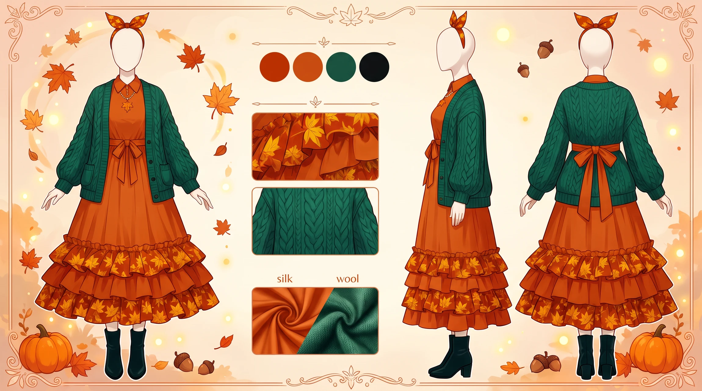
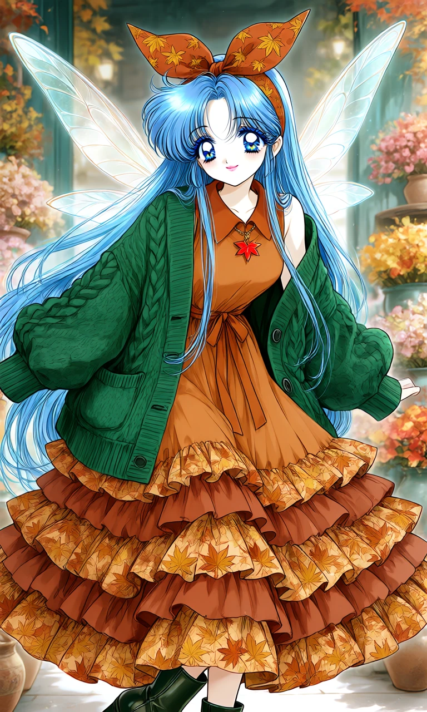
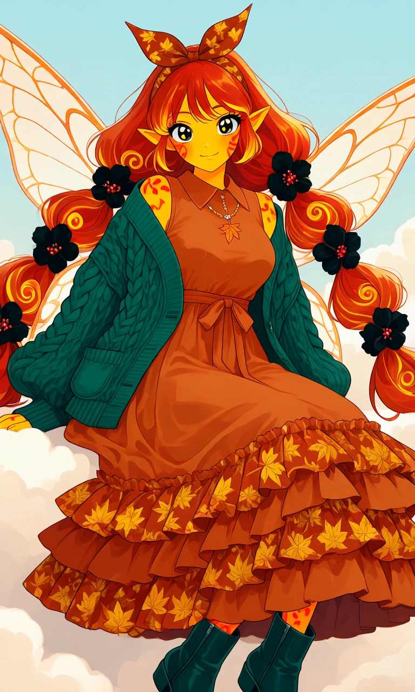

Woodland Darling: Maplewood Melody

Outfit Prompt
Wearing a beautiful warm rust-orange sleeveless collared dress, rich earthy reddish-orange fabric (#B65D3C), resembling autumn leaves and weathered terracotta pottery. The dress has a fitted bodice, a small V-shaped neckline with a soft pointed collar, and a matching rust-orange fabric sash tied into a neat bow at the waist, with long ribbon ends hanging down the front.
The dress has a gently fitted skirt beginning directly at the hips, following the natural shape of the body before widening slightly toward the hem. The skirt reaches mid-calf and features five horizontal cascading ruffled tiers, each attached directly beneath the previous one. The underlying skirt remains relatively narrow and softly structured, while the individual ruffled tiers create gentle volume and movement.
The five tiers alternate between solid warm rust-orange fabric and patterned rust-orange fabric decorated with mustard-gold autumn maple leaves. From top to bottom: first tier solid rust orange, second tier rust orange with golden maple leaves, third tier solid rust orange, fourth tier rust orange with golden maple leaves, fifth tier solid rust orange. Soft fabric folds, delicate flowing ruffle edges, clearly separated horizontal layers, balanced proportions, gentle skirt volume without excessive flaring.
An oversized deep forest green cable-knit cardigan draped loosely off both shoulders, featuring thick textured braided knit patterns, long relaxed balloon sleeves, ribbed cuffs, ribbed hem, and two large front patch pockets. The cardigan hangs open, revealing the fitted dress and rust-orange waist sash.
A warm rust-orange bow headband decorated with small mustard-gold maple leaf prints, featuring a prominent fabric bow tied at the top of the head. Two pointed bow loops and short ribbon ends, sitting neatly above the hair. The bow is attached to a narrow headband, leaving the hair uncovered.
A delicate gold necklace featuring small red-orange autumn leaves and a dangling golden maple leaf pendant.
Dark forest green leather ankle boots with rounded toes, short block heels, and simple side panels.
Warm autumn atmosphere, gentle breeze, soft natural lighting, charming cottagecore aesthetic, detailed clothing textures, rich earthy rust-orange tones, beautiful coordinated fall fashion.
Color emphasis: warm reddish rust orange, burnt orange undertones, rich autumn leaf orange, mustard-gold maple leaf patterns, deep forest green knitwear. Avoid dusty pink, mauve, beige, pale peach, and muted brown fabric.
Skirt emphasis: five distinct horizontal ruffled tiers starting at the hips, gently fitted underlying skirt, evenly spaced ruffles, alternating solid and maple-leaf-patterned layers,
Outfit Examples



